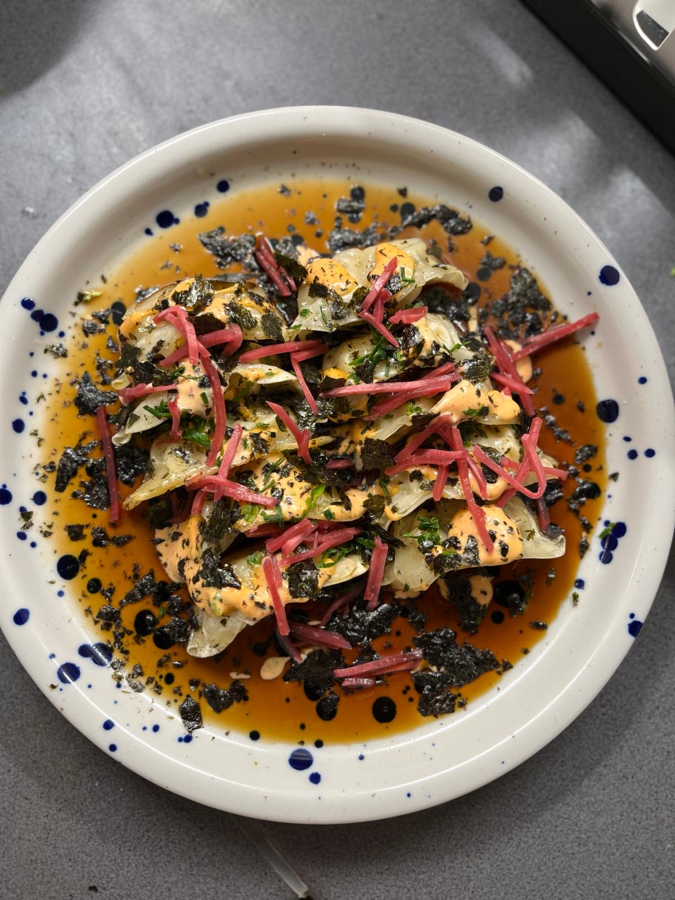

Hi guys ! I'm EJ, Nice to meet you :) I'm 22 years old student at ESSEC Business School. I love Fashion, Pottery, Traveling, and of course cooking !
I'm a big passionate of Fashion espacially second-hand clothes. I love going to charity shops and thrift shops seeking the best items at the best price. I also sell some clothes on Vinted as my little second hand shop :) My Vinted account
The perfect creative activity to relax. I recently discover this activity and I quiet enjoy it. It was a bit difficult at the first time but I would love to improve and discover new technics.
I like to go on adventures ! By myslef or with my Friends, I love dicovering new culture and talk with local people
I love to take inspiration from other cultures for my plates. I like being creative in the food dressing. I'm also triyng to select the best and fresh food with zero waste
This is a picture of my recent plate : Homemade gyozas with ginger pickles, spicy mayo and sea weed (bon appétit !)
You can find below my Food Instagram account
IG PROFILE